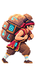
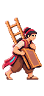
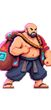
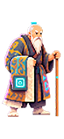
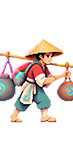
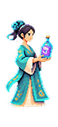
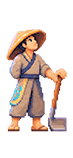
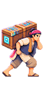

30 lá bài (mỗi lá 4 bản, 120 lá)
Chip: Nhất 1 … Cửu 9, lá Yêu 12. Hình là ảnh tạm 48×88 px, họa sĩ sẽ vẽ lại.
Họ Văn
Nhất Văn1 chip · số 1Cô gái chỉnh tay áo, đi dạo

Nhị Văn2 chip · số 2Người vác bao, quàng khănTam Văn3 chip · số 3Người chống gậy, gánh bọc
Tứ Văn4 chip · số 4Người bưng thùng
Ngũ Văn5 chip · số 5Cô đội nón ngồi, áo ca-rô
Lục Văn6 chip · số 6Cậu bé chạy, cầm đèn trên cột
Thất Văn7 chip · số 7Người áo dài cầm chai/cuộnBộ: Tôm
Bát Văn8 chip · số 8Cậu bé đi cà kheo

Cửu Văn9 chip · số 9Người vác thang và tấm ván
Chi Chi Văn12 chip · số 10 (Yêu)Chi Chi: người hói to lớn xách bọcBộ: Lèo + Tam YêuDấu sonHọ Sách
Nhất Sách1 chip · số 1Người hói khom người múa

Nhị Sách2 chip · số 2Cụ già khoác áo kẻ, chống gậy
Tam Sách3 chip · số 3Người đội nón khom người, gánh bọcBộ: Tôm
Tứ Sách4 chip · số 4Cô búi tóc cầm chaiNgũ Sách5 chip · số 5Thuyền buồm cánh kẻ sọc
Lục Sách6 chip · số 6Người hói đứng, đứa bé ngồi dưới chân
Thất Sách7 chip · số 7Cô tóc đỏ bưng mâm tròn
Bát Sách8 chip · số 8Cô ngồi hút tẩuBộ: LèoDấu son
Cửu Sách9 chip · số 9Người xách đèn lồng trên cột, chống gậyDấu son
Thang Thang Sách12 chip · số 10 (Yêu)Thang Thang: mẹ địu con sau lưng, kimono hoaBộ: Tam YêuDấu son
Họ Vạn
Nhất Vạn1 chip · số 1Người múa, co một chân, tay vung lên
Nhị Vạn2 chip · số 2Cành đào: quả đào và lá
Tam Vạn3 chip · số 3Cô gái búi tóc, tay cầm nónBộ: Tôm
Tứ Vạn4 chip · số 4Người đẩy xe có bánh
Ngũ Vạn5 chip · số 5Vọng lâu nhiều tầng mái cong

Lục Vạn6 chip · số 6Người đứng ngước nhìn, chống cuốcThất Vạn7 chip · số 7Người ôm tay lên cằm, bưng bát
Bát Vạn8 chip · số 8Cá chép dựng đứngDấu son

Cửu Vạn9 chip · số 9Người vác hòm trên vaiBộ: LèoDấu sonÔng Lão Vạn12 chip · số 10 (Yêu)Ông Lão: người hói quay lưng, đeo kiếm bên hôngBộ: Tam YêuDấu son